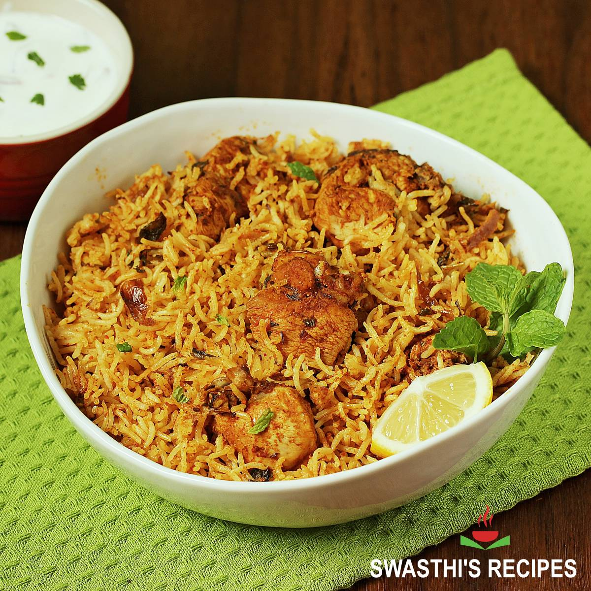

Biryani

Biryani is a mixed rice dish originating among the Muslims of the Indian subcontinent. It is made with Indian spices, rice, and usually some type of meat (chicken, beef, goat, pork, lamb, prawn, or fish), and sometimes, in addition, eggs and/or vegetables such as potatoes in certain regional varieties.
It is popular throughout the Indian subcontinent and among the diaspora from the region. It is also prepared in other regions such as Iraqi Kurdistan.
Ingredients:
- Basmati rice
- Chicken
- Yogurt
- Onions
- Tomatoes
- Garlic
- Ginger
- Green chilies
- Coriander leaves
- Mint leaves
- Spices
- Cumin seeds
- Coriander seeds
- Black pepper
- Cloves
- Cinnamon
- Cardamom
- Bay leaves
- Star anise
- Mace
- Nutmeg
- Red chili powder
- Turmeric
- Saffron
Recipe:
- Marinate the chicken with yogurt, ginger, garlic, green chilies, coriander leaves, mint leaves, and spices.
- Soak the basmati rice in water for 30 minutes.
- Boil the rice with whole spices until 70% cooked.
- Layer the marinated chicken and partially cooked rice in a pot.
- Seal the pot with dough and cook on low heat until the chicken is tender and the rice is fully cooked.
- Enjoy your delicious biryani!
Home